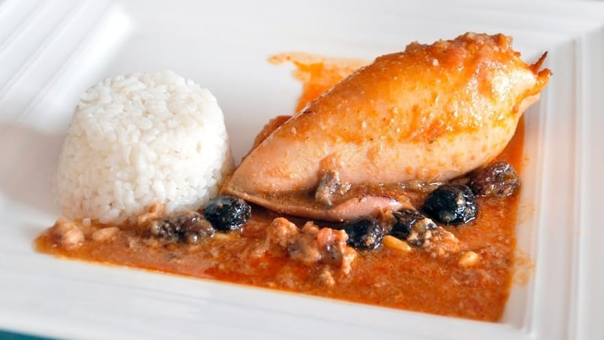
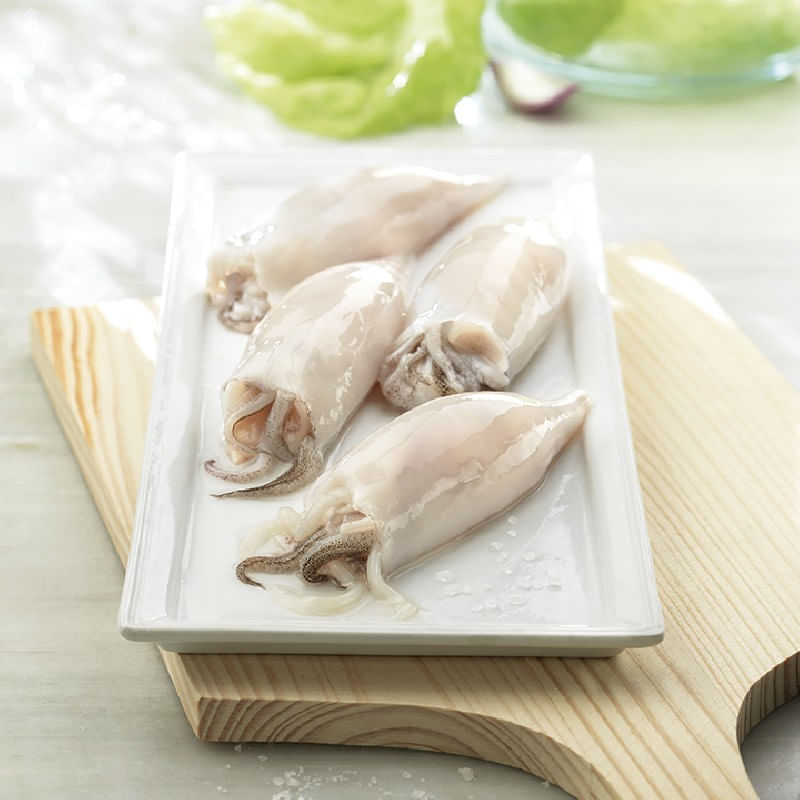
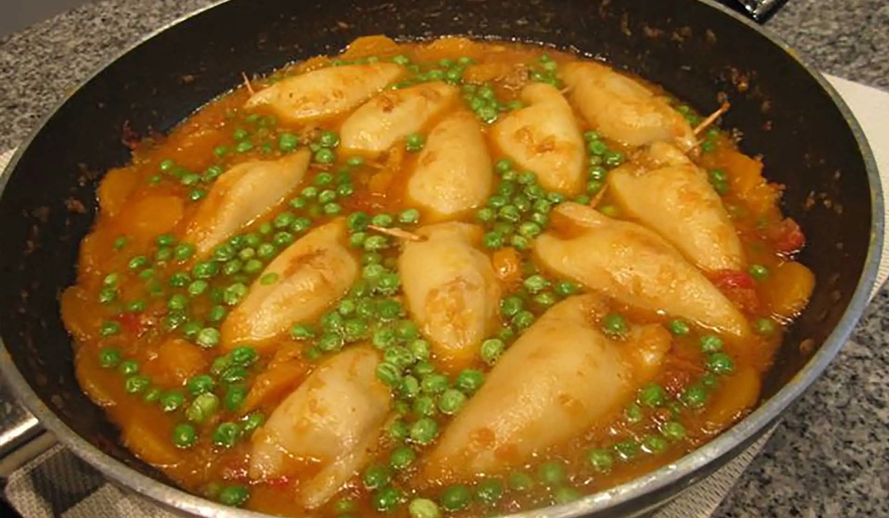

Calamars farcits del Celler Son Guixa

Un plat amb sabor de Mallorca
Els calamars farcits combinen els sabors de la mar amb una elaboració pausada. Al Celler Son Guixa els presentam com un plat per gaudir sense presses, acompanyat de la seva salsa.
Els ingredients
Aquesta versió parteix de calamars, ceba, tomàtiga, all, julivert, ou i pa ratllat. Les aletes i els tentacles s’aprofiten per preparar el farciment, mentre que les verdures formen la base de la salsa.

La preparació
Es netegen els calamars i es prepara el farciment amb les aletes i els tentacles picats, all, julivert, ou i pa ratllat. S’omplen sense atapeir-los i es tanquen amb un escuradents. Després es couen dins un sofregit de ceba i tomàtiga fins que queden tendres i el farciment està ben cuit.
